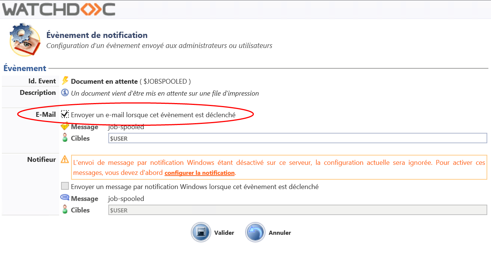

Principe
Il peut être utile d'envoyer le code PUK aux utilisateurs de Watchdoc, notamment lorsque c'est l'unique code pour s'authentifier sur un WES WES (Watchdoc Embedded Solution - Solution Embarquée Watchdoc)
WES est le nom donné à l'interface Watchdoc embarquée sur les périphériques d'impression. Il existe des interfaces spécifiques à chaque périphérique tiers et donc autant de WES que de constructeurs de périphériques. Ces interfaces servent à gérer l'impression depuis le périphérique lui-même..
WES (Watchdoc Embedded Solution - Solution Embarquée Watchdoc)
WES est le nom donné à l'interface Watchdoc embarquée sur les périphériques d'impression. Il existe des interfaces spécifiques à chaque périphérique tiers et donc autant de WES que de constructeurs de périphériques. Ces interfaces servent à gérer l'impression depuis le périphérique lui-même..
Par ailleurs, si vous avez activé la page "Mon compte", l'utilisateur peut y trouver son code PUK (cf. Consulter ses codes et badges).
Vous pouvez aussi aussi décider d'envoyer ce code par mail grâce à la fonction Notification de Watchdoc.
La notification (envoi de mail) est déclenchée par certains événements prédéfinis.
Deux événements peuvent être utilisés pour envoyer le code PUK à l'utilisateur :
-
lorsque l'utilisateur doit s'authentifier pour la première fois sur le périphérique d'impression à l'aide d'un badge. Il doit pour cela enrôler
 Action au cours de laquelle un compte utilisateur est associé au numéro de badge qui lui appartient. L'enrôlement est réalisé lors de la première utilisation d'un badge. L'enrôlement peut être réalisé par le responsable informatique lorsqu'il délivre le badge à un utilisateur ou par l'utilisateur lui-même qui saisit son identifiant (code PIN, code PUK ou identifiant et mot de passe) qui est alors associé à son numéro de badge. Une fois l'enrôlement réalisé, le numéro de badge est associé définitivement à son propriétaire. son badge. Le mail fournit alors la procédure d'enrôlement Action au cours de laquelle un compte utilisateur est associé au numéro de badge qui lui appartient. L'enrôlement est réalisé lors de la première utilisation d'un badge. L'enrôlement peut être réalisé par le responsable informatique lorsqu'il délivre le badge à un utilisateur ou par l'utilisateur lui-même qui saisit son identifiant (code PIN, code PUK ou identifiant et mot de passe) qui est alors associé à son numéro de badge. Une fois l'enrôlement réalisé, le numéro de badge est associé définitivement à son propriétaire.. Ce mail n'est envoyé qu'une fois (avant l'enrôlement).
Action au cours de laquelle un compte utilisateur est associé au numéro de badge qui lui appartient. L'enrôlement est réalisé lors de la première utilisation d'un badge. L'enrôlement peut être réalisé par le responsable informatique lorsqu'il délivre le badge à un utilisateur ou par l'utilisateur lui-même qui saisit son identifiant (code PIN, code PUK ou identifiant et mot de passe) qui est alors associé à son numéro de badge. Une fois l'enrôlement réalisé, le numéro de badge est associé définitivement à son propriétaire. son badge. Le mail fournit alors la procédure d'enrôlement Action au cours de laquelle un compte utilisateur est associé au numéro de badge qui lui appartient. L'enrôlement est réalisé lors de la première utilisation d'un badge. L'enrôlement peut être réalisé par le responsable informatique lorsqu'il délivre le badge à un utilisateur ou par l'utilisateur lui-même qui saisit son identifiant (code PIN, code PUK ou identifiant et mot de passe) qui est alors associé à son numéro de badge. Une fois l'enrôlement réalisé, le numéro de badge est associé définitivement à son propriétaire.. Ce mail n'est envoyé qu'une fois (avant l'enrôlement). -
lorsqu'un utilisateur a envoyé une demande d'impression, un mail peut l'informer qu'il peut débloquer son impression sur le périphérique. Le code PUK est alors rappelé dans le mail. Ce mail peut être envoyé à chaque demande d'impression, si Watchdoc fonctionne en mode "validation".
Ces envois de mails sont gérés dans l'interface de gestion des Notifications.
Procédure
Vérifiez en prérequis que la fonction de Notification est activée et configurée (cf. Watchdoc - Notifications - Configurer les notifications).
Pour configurer l'envoi du code PUK par mail à utilisateur :
-
depuis le Menu principal de Watchdoc, section Configuration, cliquez sur Configuration avancée ;
-
dans l'interface Configuration avancée, cliquez sur l'entrée Notifications ;
-
dans la liste des notifications, sélectionnez :
-
dans la section "Evénements pour les travaux d'impression" > "Document en attente" si vous souhaitez que le mail soit envoyé à chaque fois que l'utilisateur lance une impression ;
-
dans la section "Autres événements" > "Instructions pour auto-enrôlement badge" si l'auto-enrôlement est configuré avec le code PUK de l'utilisateur (cf. Configuration du profil WES associé au périphérique d'impression) ;
-
-
cliquez sur le bouton
 pour ouvrir l'interface de configuration de la notification ;
pour ouvrir l'interface de configuration de la notification ; -
dans l'interface "Evénement de notification", section E-mail, cochez la case "Envoyer un e-mail lorsque cet événement est déclenché" :

{kind=link}
è Dès lors, les utilisateurs reçoivent un mail comportant leur code PUK :
-
soit avant l'enrôlement de leur badge ;
-
soit après avoir lancé une impression.
{kind=link}